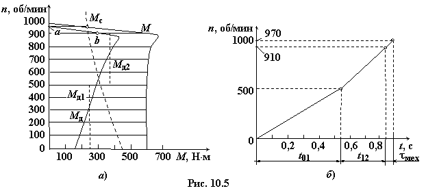

Механическая характеристика n = ƒ(М) трёхфазного асинхронного двигателя с короткозамкнутым ротором и характеристика n = ƒ(Мс) присоединённого к нему производственного механизма приведены на рис. 10.5а.
Данные электродвигателя: Pн = 5 кВт, Uн = 380 В, соединение обмоток статора по схеме звезда, nн = 950 об/мин, момент инерции Jдв = 0,38 кг·с2, 2р = 8, КПД η = 0,9, cosφ = 0,86, f = 50 Гц.

Определить:
• номинальный момент двигателя
привода Мн и, на основании рис. 10.5а, отношения β = Мп/Мн, λ = Мmax/Мн;
• момент Му при установившейся частоте вращения привода;
• время пуска, если приведённый к
валу двигателя момент инерции механизма Jпр = 2,2 кг·с2;
• электромеханическую постоянную
времени τмех на прямолинейном участке аb кривой динамического момента Мд на рис. 10.5а;
• построить график n = ƒ(t).
Решение. 1. Номинальный момент двигателя
2. По рис. 10.5а момент пусковой Мп
= 600 Н·м, Мmax = 680 Н·м,
3. Момент в установившемся режиме по
рис. 10.5а: Му = 245 Н·м, установившаяся частота вращения привода nу = 970 об/мин.
4. Динамический момент, кривая которого аппроксимирована двумя вертикальными линиями Мд1 = 250
Н·м и Мд2 = 380 Н·м на нелинейной её части, увеличивает частоту вращения привода соответственно с n = 0 до 500 об/мин и с n = 500 до 910 об/мин. Необходимые для этих диапазонов Δn интервалы времени:
<
5. Электромеханическая
постоянная времени на участке аb момента Мд
6. График n = f(t)
показан на рис. 10.5б.